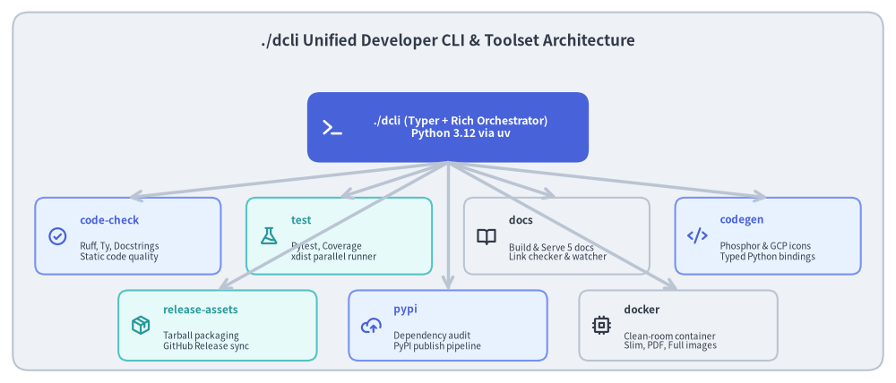
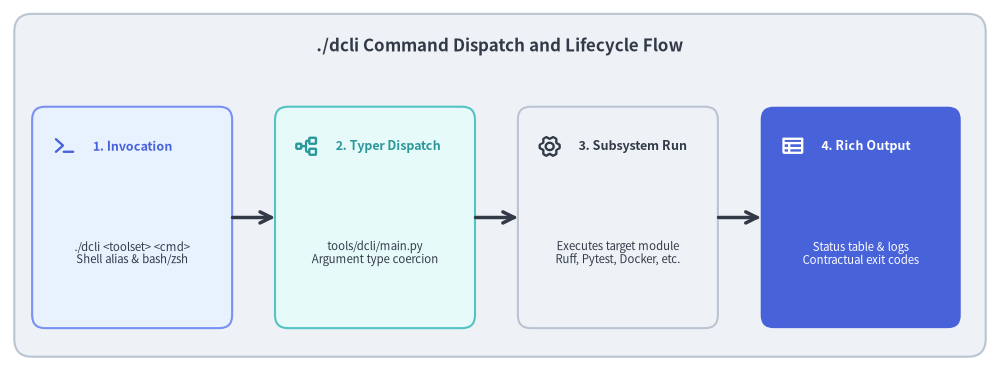

Developer Tooling: The ./dcli Unified Orchestrator
The Drawlib repository avoids fragmented bash scripts, undocumented flags, and manual multi-tool handoffs by consolidating all engineering operations into a single custom CLI: ./dcli.

Source Code
from drawlib.canvas import save, setup
from drawlib.icons import phosphor
from drawlib.lines import line
from drawlib.shapes import rectangle
from drawlib.styles import Styles
from drawlib.text import text
setup(width=140, height=60)
rectangle((70, 30), width=136, height=56, style=Styles.Neutral.patch(shape_r=2.5))
text(
(70, 53.5),
"./dcli Unified Developer CLI & Toolset Architecture",
style=Styles.DarkBold.patch(text_size=12.2),
)
# Central CLI dispatcher
rectangle((70, 40), width=44, height=11, style=Styles.PrimaryFlat.patch(shape_r=2.0))
phosphor.terminal((52, 40), width=3.8, style=Styles.WhiteBold)
text((72, 40), "./dcli (Typer + Rich Orchestrator)\nPython 3.12 via uv", style=Styles.WhiteBold.patch(text_size=8.8))
# 7 Toolsets
row1 = [
(20, "code-check", "Ruff, Ty, Docstrings\nStatic code quality", phosphor.check_circle, Styles.PrimaryNeutral, Styles.PrimaryBold),
(53, "test", "Pytest, Coverage\nxdist parallel runner", phosphor.flask, Styles.SecondaryNeutral, Styles.SecondaryBold),
(87, "docs", "Build & Serve 5 docs\nLink checker & watcher", phosphor.book_open, Styles.Neutral, Styles.DarkBold),
(120, "codegen", "Phosphor & GCP icons\nTyped Python bindings", phosphor.code, Styles.PrimaryNeutral, Styles.PrimaryBold),
]
row2 = [
(34, "release-assets", "Tarball packaging\nGitHub Release sync", phosphor.package, Styles.SecondaryNeutral, Styles.SecondaryBold),
(70, "pypi", "Dependency audit\nPyPI publish pipeline", phosphor.cloud_arrow_up, Styles.PrimaryNeutral, Styles.PrimaryBold),
(106, "docker", "Clean-room container\nSlim, PDF, Full images", phosphor.cpu, Styles.Neutral, Styles.DarkBold),
]
for x, title, desc, icon_func, card_style, icon_style in row1:
rectangle((x, 23), width=29, height=12, style=card_style.patch(shape_r=1.5))
icon_func((x - 11, 23), width=3.2, style=icon_style)
text((x - 7.5, 25.5), title, style=icon_style.patch(halign="left", text_size=8.5))
text((x - 7.5, 20.5), desc, style=Styles.Dark.patch(halign="left", text_size=7.2))
line((70, 34.5), (x, 29), arrow_head="->", style=Styles.NeutralBold)
for x, title, desc, icon_func, card_style, icon_style in row2:
rectangle((x, 9), width=31, height=11, style=card_style.patch(shape_r=1.5))
icon_func((x - 12, 9), width=3.2, style=icon_style)
text((x - 8.5, 11.5), title, style=icon_style.patch(halign="left", text_size=8.5))
text((x - 8.5, 6.5), desc, style=Styles.Dark.patch(halign="left", text_size=7.2))
line((70, 34.5), (x, 14.5), arrow_head="->", style=Styles.NeutralBold)
save()
1. Concept: The Unified Developer CLI Pattern
In complex software repositories, developers and AI coding agents routinely execute dozens of distinct tool commands:
- Static analysis:
ruff check,ruff format,ty check, docstring linters. - Test suites:
pytest, coverage analyzers, parallel test dispatchers (pytest -n auto). - Document compilers: building multi-page HTML sites, vector PDFs, presentation slides, and standalone README graphics.
- Asset pipelines: downloading font archives, generating icon bindings from JSON schemas, and uploading release tarballs.
- Packaging: dependency updates, semantic version auditing, and PyPI publishing.
When these operations are implemented as ad-hoc shell scripts or bare terminal commands, three points of friction inevitably emerge:
- Command Drift & Tribal Knowledge: Different contributors run different flags, leading to "works on my machine" failures during CI.
- AI Agent Tool Fragility: Coding agents must guess complex multi-flag CLI invocations rather than calling standardized tasks.
- Execution Latency: Without centralized orchestration, commands lack unified logging, exit code handling, and Tab autocompletion.
./dcli solves this by introducing a Unified CLI Architecture built on Python 3.12, Typer, and Rich, residing directly in tools/dcli/.
2. Positioning: The Single Entrypoint for Repository Operations
Within Drawlib's repository structure, ./dcli acts as the root operational interface, sitting alongside src/drawlib/, tests/, and docs/:

Source Code
from drawlib.canvas import save, setup
from drawlib.icons import phosphor
from drawlib.lines import line
from drawlib.shapes import rectangle
from drawlib.styles import Styles
from drawlib.text import text
setup(width=140, height=52)
rectangle((70, 26), width=136, height=48, style=Styles.Neutral.patch(shape_r=2.5))
text(
(70, 45.5),
"./dcli Command Dispatch and Lifecycle Flow",
style=Styles.DarkBold.patch(text_size=12.2),
)
steps = [
(18.5, "1. Invocation", "./dcli <toolset> <cmd>\nShell alias & bash/zsh", phosphor.terminal, Styles.PrimaryNeutral, Styles.PrimaryBold),
(52.5, "2. Typer Dispatch", "tools/dcli/main.py\nArgument type coercion", phosphor.tree_structure, Styles.SecondaryNeutral, Styles.SecondaryBold),
(86.5, "3. Subsystem Run", "Executes target module\nRuff, Pytest, Docker, etc.", phosphor.gear_six, Styles.Neutral, Styles.DarkBold),
(120.5, "4. Rich Output", "Status table & logs\nContractual exit codes", phosphor.table, Styles.PrimaryFlat, Styles.WhiteBold),
]
for x, title, desc, icon_func, card_style, icon_style in steps:
rectangle((x, 21.5), width=28, height=31, style=card_style.patch(shape_r=1.8))
icon_func((x - 9.5, 31.5), width=3.4, style=icon_style)
text((x - 5.5, 31.5), title, style=icon_style.patch(halign="left", text_size=9.0))
sub_style = Styles.White if card_style == Styles.PrimaryFlat else Styles.Dark
text((x, 16.5), desc, style=sub_style.patch(text_size=8.2))
for i in range(3):
x_from = steps[i][0] + 14.0
x_to = steps[i + 1][0] - 14.0
line((x_from, 21.5), (x_to, 21.5), arrow_head="->", style=Styles.DarkBold)
save()
Every operational task is assigned to one of seven specialized sub-toolsets:
| Toolset | Module (tools/dcli/) |
Primary Responsibility |
|---|---|---|
code-check |
code_check/ |
Multi-stage static analysis (Ruff lint/format, Ty type check, docstring validation, line counting). |
test |
test.py |
Pytest orchestration with code coverage, test shortcuts, and parallel xdist execution. |
docs |
docs/ |
Build and preview server management across all 5 repository documentation projects. |
codegen |
codegen/ |
Automated code generation for Phosphor and GCP icon vector and PNG bindings. |
release-assets |
release_assets/ |
Archive creation, checksum generation, and GitHub Releases asset synchronization. |
pypi |
pypi/ |
Dependency inspection, version auditing, pyproject.toml synchronization, and publication. |
docker |
docker.py |
Building and testing clean-room Linux container images (slim, pdf, assets, full). |
3. Details: Dispatch Mechanics and Shell Integration
3.1. Shell Alias & Dynamic Tab-Completion
To make ./dcli as instantaneous as standard Unix commands, the repository provides shell integration via source ./dcli:
# Register 'dcli' alias and dynamic completion in current shell
source ./dcli
tools/dcli/completion.py hooks into Bash and Zsh completion APIs. When the user or agent presses [Tab], Typer dynamically inspects the command hierarchy, suggesting available toolsets (code-check, test, docs, etc.) and their nested flags without requiring static shell scripts.
3.2. Uniform Rich Formatting & Exit Code Propagation
./dcli wraps all subprocess invocations in Rich terminal formatters:
- Visual Status Tables: Running
./dcliwith no arguments displays a live table summarizing all toolsets, their purposes, and common flags. - Fail-Fast Error Handling: If a linter, type check, or unit test fails,
./dclitraps the underlying error, prints formatted diagnostic output tostderr, and propagates non-zero exit codes to ensure CI runners immediately fail.
Next, explore how external assets and icon bindings are generated in Code Generation & Assets.